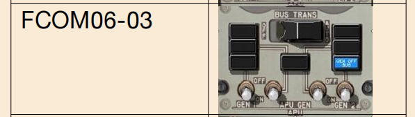
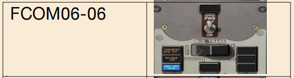
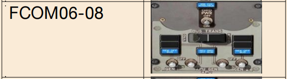

2023华东题库(2069题)
601~800
FCOM05039
按压接通音频选择/控制面板上的“SPKR”电门，则在喇叭里可以听到什么?
A、飞行内话系统的通话
B、导航台的音频信号
C、发射机选择电门选择的通讯系统的通话
D、已被选择了的接收机的音频信号
D
FCOM05040
按压音频选择/控制面板上的“MIC SELECTOR”电门：
A、选择相应的通讯系统用于发射
B、在同一块音频选择/控制面板上，一次只能选择一个电门，按压另一个电门将解除对现用电门的选择
C、不论接收机电门是否在接通位，相应的接收机均被选择接通
D、其它选项都正确
D
FCOM05041
当机长的音频选择/控制面板工作在降级方式时，机长可以使用多少个无线电进行通讯?
A、1个
B、2个
C、3个
D、音频面板上的所有系统
A
FCOM05042
通信系统包括：
A、无线电通信系统；内话通信系统；驾驶舱语音记录器系统；机组通信警戒系统
B、VHF甚高频；HF高频；ACARS 通信； SELCAL 选择呼叫；驾驶舱语音记录器；飞行内话；
C、音频系统；飞行内话系统；服务内话系统；旅客广播系统；呼叫系统； ACARS 系统
D、
A
FCOM05043
在机组耳机里听到的高度警告声、近地警告系统的警告声和 风切变警告声的音量大小，机组能不能调节？
A、可以在一定范围内调节
B、只有近地警告声可调，其它的不可调
C、都不能调，保持调定的音量
D、可以随意调节
C
FCOM05044
当 HF 通讯的频率被输入后，何时可以进行通讯？
A、输入频率后就可以直接通讯
B、等 10 秒以后
C、当音频系统里的一个稳定的或是断续的音频声响停止后，即天 线调节好后
D、当绿灯亮了以后
C
FCOM05045
在地面有VHF通讯，为了不受周围建筑物的干扰，通常用哪部VHF 天线通讯？
A、VHF-1
B、VHF-2
C、VHF-3
D、
A
FCOM05046
有关音频系统的降级操作下列哪种说法不正确？
A、机长的音频选择板只能通过VHF-1发射和接收。
B、氧气面罩话筒仍正常工作。
C、飞行内话系统仍正常工作。
D、
C
FCOM05047
对于无线电调谐面板上的Offside Tuning Light（对侧调谐）灯亮，下列说法最正确的一项是
A、通常由此面板调谐的的无线电台正由另一面板调谐
B、现用的频率是由另一面板调谐的
C、正用该面板调谐通常与其无关的无线电台
D、通常由此面板调谐的的无线电台正由另一面板调谐或者正用该面板调谐通常与其无关的无线电台
D
FCOM05048
接通音频选择/控制面板上的“VHF”发射选择电门时，发现其接收机电门灯 不亮，说明什么
A、接收机故障
B、这是正常的，接收机已经接通
C、需按压接收机电门接通接收机
D、接收机电门灯故障
B
FCOM05049
将音频选择/控制面板上的滤波电门放到什么位置可以接收到语音音频信 号？
A、仅“V”位
B、“V”位和“B”位
C、仅“R”位
D、“R”位和“B”位
B
FCOM05050
什么情况下可以用驾驶舱话音记录器面板上的抹除电门抹除记录器里 全部4个频道的内容
A、在地面，按压抹除按钮超过4秒钟
B、不论空中地面，有交流电时，按压抹除按钮超过2秒
C、在地面，有交流电且停留刹车刹上时，按压抹除按钮超过2秒
D、在地面，有交流电且停留刹车刹上时，瞬时按压即可
C
FCOM05051
乘务员对驾驶舱的呼叫信号与地面人员呼叫驾驶舱的信号有何不同？
A、声音不同
B、声音响的次数不同
C、指示灯不同
D、没有不同
D
FCOM05052
飞机的无线电高度表所发射的是：
A、调频波
B、调幅波
C、等幅波
D、
A
FCOM05053
当机长的音频选择/控制面板工作在降级方式时,副驾驶可以使用多少个通讯系统进行通讯?
A、1个
B、2个
C、3个
D、音频面板上的所有系统
D
FCOM05055
在音频选择/控制面板上,"R/T-/I/C"电门的"R/T"和"I/C"各表示什么含义?
A、R/T为按压发话,I/C为飞行内话
B、R/T为备用通话方式,I/C为正常通话方式
C、R/T为通过发射机选择电门选择的通讯系统进行发话,I/C为通过飞行内话系统发话
D、R/T为正常通话,I/C为飞行内话
C
FCOM05056
HF通讯面板上的频率指示窗指示的频率范围为:
A、2.000到29.000兆赫
B、2.000到29.999兆赫
C、1.000到20.999兆赫
D、12.00到39.999兆赫
B
FCOM05057
使用哪种方法可以接通飞行内话系统发话？
A、选择发射机→将ASP/ACP上的PTT电门置“R/T”位
B、选择发射机→将驾驶盘上的PTT电门置“MIC”位
C、直接将ASP/ACP上的PTT电门置 “I/C”位或将驾驶盘上的PTT电门置“INT”位
D、
C
FCOM05058
飞机在地面时，驾驶舱与地面人员之间可以____ 通话。
A、飞行内话系统
B、勤务内话系统
C、不能通话
D、飞行内话系统和勤务内话系统
D
FCOM05059
在737-300上，VHF——1和VHF——2是相互独立的，则:
A、机长、副驾驶可以同时使用不同的通讯电台通话
B、机长只能使用VHF——1，副驾驶只能使用VHF——2
C、机长只能使用VHF——2，副驾驶只能使用VHF——1
D、机长、副驾驶不能同时说话
A
FCOM05060
要将飞机外部插孔加入勤务内话系统，则:
A、必须接通飞行内话电门
B、必须接通勤务内话电门
C、不受控制
D、
B
FCOM05061
地面人员要与乘务员通话, 必须接通哪个电门？
A、后顶板上的服务内话电门
B、驾驶舱音频选择/控制面板上的服务内话发射机电门
C、乘务员面板上的服务内话电门
D、后顶板上的服务内话电门和驾驶舱音频选择/控制面板上的服务内话发射机电门
A
FCOM05062
正常情况下，对于高度警戒、近地警告、防撞系统和风切变的声响警告，哪些可以关掉，哪些不能关掉？
A、仅高度警戒可以关掉， 其它的关不掉
B、高度警戒和近地警告可以关掉， 其它的关不掉
C、高度警戒、近地警告和防撞系统可以关掉， 风切变的关不掉
D、都不能关掉
D
FCOM05063
当音频选择/控制面板工作在降级方式时, 下面哪一个还可以工作？
A、可用电台的接收机电门
B、驾驶盘按压发话电门的内话位
C、音频选择/控制面板上按压相应的发话电门的”MIC”位
D、相应的扬声器
C
FCOM06001
在空中，如果失去所有交流电源，则备用交流汇流条、备用直流汇流条由谁供电?
A、备用交、直流汇流条也都没电，除非将备用电源电门扳到“BAT”位
B、备用交流汇流条由电瓶汇流条经静变流机供电，备用直流汇流条由热电瓶汇流条直接供电
C、备用交流汇流条由热电瓶汇流条经静变流机供电，备用直流汇流条由热电瓶汇流条直接供电
D、备用交流汇流条由电瓶经静变流机供电，备用直流汇流条由电瓶直接供电
D
FCOM06002
静变流机的功用是：
A、将直流电变换成交流电
B、将低压直流电变换成高压直流电
C、将交流电变换成直流电
D、将115伏的交流（AC）电转化为28伏交流（AC）电
A
FCOM06003

如图FCOM06-01，当出现如下指示时，备用交流汇流条由什么供电？
A、由于失去正常电源，备用交流汇流条由静变流机供电
B、由1号转换汇流条供电
C、由TR3供电
D、由电瓶直接供电
B
FCOM06004

如图FCOM06-04，当备用电源电门在电瓶位时，下列哪个说法是错误的？
A、当有交流电源时，备用交流汇流条由1号交流转换汇流条供电
B、不管有无交流电，备用交流汇流条和备用直流汇流条都由电瓶供电
C、电瓶汇流条由电瓶供电
D、如果电瓶电门在OFF位，则转换的热电瓶汇流条未通电。
A
FCOM06005
在飞机电气系统有正常电源的情况下, 将备用电源电门放到“BAT”位, 则备用交流汇流条由谁供电?
A、仍保持由交流转换汇流条供电
B、由电瓶通过静变流机供电
C、由电瓶汇流条通过静变流机供电
D、由热电瓶汇流条供电
B
FCOM06006
当飞机失去所有交流电源后，备用系统向必要的系统提供_______伏的交流电和______伏的直流电源
A、115,28
B、115,24
C、110,24
D、110,28
B
FCOM06007
备用交流汇流条由哪个汇流条供电：
A、如果转换汇流条故障或者断开，直流电源有电，任何电源
B、如果双发和APU故障，由电瓶通过TR1供电
C、正常情况下由115伏1号主交流汇流条供电
D、正常情况下由一号交流转换汇流条供电
D
FCOM06008
下列哪项不是备用电源系统的一部分？
A、主汇流条
B、备用交流汇流条
C、转换热电瓶汇流条
D、电瓶汇流条
A
FCOM06009

如图FCOM06-10，当备用电源开关在自动位置，如果失去所有交流电源会导致电瓶向备用负载供电：
A、只有在地面上时
B、只有在空中
C、只有在备用电源开关在电瓶位置
D、空中和地面都可以
D
FCOM06010
在空中，左、右整体驱动发电机都在供电。如果将“备用电源” 电门扳到“BAT”位，则备用交、直流汇流条由谁供电？
A、备用交流汇流条由 1# 转换汇流条供电，备用直流汇流条由 1# 直流汇流条供电
B、备用交流汇流条由 1# 转换汇流条供电，备用直流汇流条由 热电瓶汇流条供电
C、备用交流汇流条由电瓶经静变流机供电，备用直流汇流条由电瓶供电
D、备用交流汇流条由热电瓶汇流条经静变流机供电，备用直流 汇流条由热电瓶汇流条供电
C
FCOM06011
什么汇流条没电会导致“备用电源关断”灯亮？
A、备用交、直流汇流条和电瓶汇流条中的一个或多个
B、备用交、直流汇流条和热电瓶汇流条中的一个或多个
C、备用交、直流汇流条和转换热电瓶汇流条中的一个或多个
D、备用交、直流汇流条、电瓶汇流条和直流汇流条中的一个或多个
A
FCOM06012
电气系统有正常电源时, 将备用电源电门放到”BAT”位并将电瓶电门放到“OFF”位:
A、电瓶汇流条由TR3 供电, 转换热电瓶汇流条由电瓶供电
B、电瓶汇流条由电瓶供电, 转换热电瓶汇流条没电
C、电瓶汇流条和转换热电瓶汇流条都由电瓶供电
D、备用汇流条由电瓶供电, 电瓶汇流条和转换热电瓶汇流条都没电
B
FCOM06013
电瓶电门在”ON”位时, 将备用电源电门放到“OFF”位
A、备用交、直流汇流条都没电, 电瓶汇流条有电
B、备用交、直流汇流条和电瓶汇流条都没电
C、备用交、直流汇流条、电瓶汇流条和转换热电瓶汇流条都没电
D、仅备用交流汇流条没电，备用直流汇流条、电瓶汇流条和转换热电瓶汇流仍有电
A
FCOM06014
空中，琥珀色的 TR 组件灯亮，说明：
A、TR1 和 TR3 故障
B、任何一个 TR 故障
C、互联保持在开位
D、TR1 故障，或者 TR2 和 TR3 故障
D
FCOM06015
TRI、TR2和TR3分别由谁供电?
A、1＃交流转换汇流条、2＃交流转换汇流条，2＃主交流汇流条
B、1＃主交流汇流条、1＃交流转换汇流条，2＃交流转换汇流条
C、1＃交流转换汇流条、2＃交流转换汇流条，TR3由2#交流转换汇流条供电（ 1号作备用电源）
D、1＃交流转换汇流条、2＃主交流汇流条，2＃交流转换汇流条
C
FCOM06016
变压整流器的作用是：
A、将高压交流电转变为低压直流电
B、将低压交流电转变为高压直流电
C、将低压直流电转换为高压交流电
D、将高压直流电转换为低压交流电
A
FCOM06017
正常情况下，备用直流汇流条由谁供电？
A、仅TR1
B、仅TR2
C、TR1，TR2和TR3
D、TR1和TR3，TR2
C
FCOM06018
737NG飞机28伏直流电源由几个变压整流器（TR）组件供电？
A、2个
B、3个
C、1个
D、4个
B
FCOM06019
在地面, “TR”琥珀色灯亮表明:
A、任一变压整流（TR）失效
B、TR1故障
C、TR2和TR3都失效
D、TR1、TR2和TR3都失效
A
FCOM06020
正常情况下：
A、TR2给电瓶汇流条供电，电瓶为电瓶汇流条提供备份电源
B、TR3给电瓶汇流条供电，静变流机为电瓶汇流条的备份电源
C、TR3变压整流器是电瓶汇流条的正常电源并作为TR1和TR2变压整流器的备用电源, 而电瓶汇流条的备用电源则是电瓶.
D、TR2变压整流器是电瓶汇流条的正常电源并作为TR1和TR3变压整流器的备用电源, 而电瓶汇流条的备用电源则是电瓶.
C
FCOM06021
在地面，左右整体驱动发电机都在工作并都在向电气系统供电； 地面电源已经插上，且“地面电源生效” 灯亮；将地面电源电门 扳到“接通”位：
A、左、右交流转换汇流条都转换到由地面电源供电
B、左、右交流转换汇流条仍保留由左、右整体驱动发电机供电
C、左交流转换汇流条转换到地面电源供电，右交流转换汇流条仍保 持由右整体驱动发电机供电
D、左交流转换汇流条仍保持由左整体驱动发电机供电，右交流转换汇流条转换到地面电源供电
A
FCOM06022
琥珀色的电瓶放电灯亮说明：
A、电瓶没有电
B、当直流电表选择在电瓶位置，电瓶开关在接通位置，电瓶在放电
C、当电瓶开关在接通位置时候过度放电
D、电瓶过度放电
C
FCOM06023
辅助电瓶充电器由以下哪些汇流条供电：
A、1号地面勤务交流汇流条
B、2号地面勤务交流汇流条
C、2号转换汇流条
D、1号转换汇流条
A
FCOM06024
两台整体驱动发电机失效后，由电瓶供电的直流汇流条包括：
A、电瓶汇流条,备用直流汇流条,热电瓶汇流条
B、备用直流汇流条,热电瓶汇流条&转换热电瓶汇流条
C、电瓶汇流条,备用直流汇流条,热电瓶汇流条和转换热电瓶汇流条(即使当电瓶电门处于关位时)
D、电瓶汇流条,备用直流汇流条,热电瓶汇流条和转换热电瓶汇流条
D
FCOM06025
主电瓶由哪个汇流条充电？
A、一号直流汇流条
B、二号直流汇流条
C、二号地面勤务汇流条
D、一号交流主汇流条
C
FCOM06026
电瓶向备用汇流条供电时，
A、辅助电瓶和主电瓶串联工作
B、主电瓶单独工作
C、辅助电瓶和主电瓶并联工作
D、辅助电瓶充电器和电瓶与电源分配系统隔离
C
FCOM06027
飞行中，在只有单个电瓶（已充满）供电的情况下，电瓶可以提供至少多长时间的备用电源？
A、30分钟
B、20分钟
C、35分钟
D、60分钟
A
FCOM06028
只要____，Swithched Hot Battery Bus（转换热电瓶汇流条）就通电。
A、1号变压整流器通电
B、1号转换汇流条通电
C、地面勤务交流汇流条通电
D、电瓶电门在开位
D
FCOM06029

如图FCOM06-05，在电瓶是唯一电源时，当电瓶开关在关位，以下哪条汇流条有电？
A、备用直流汇流条
B、可开关式的电瓶汇流条
C、热电瓶汇流条
D、备用交流汇流条
C
FCOM06030
737的电瓶是
A、24伏镍镉电瓶
B、24伏镍氢电瓶
C、28伏镍镉电瓶
D、28伏镍氢电瓶
A
FCOM06031
以下哪个汇流条不能由电瓶供电？
A、热电瓶汇流条
B、备用直流汇流条
C、主汇流条
D、转换的热电瓶汇流条
C
FCOM06032
737NG飞机的电瓶由哪个部件负责充电？
A、TR1
B、TR2
C、TR3
D、特定的电瓶充电器
D
FCOM06033
电瓶正常，电瓶电门在ON位时
A、转换的热电瓶汇流条有电
B、转换的热电瓶汇流条无电
C、热电瓶汇流条和转换的热电瓶汇流条都无电
D、热电瓶汇流条有电，转换的热电瓶汇流条无电
A
FCOM06034
飞行中，当电瓶是唯一的电源时，将电瓶电门放到“OFF”位，将不会关掉哪个电源 ？
A、电瓶汇流条和转换热电瓶汇流条
B、备用交、直流汇流条
C、静变流机
D、热电瓶汇流条
D
FCOM06035
正常电源可用时，将电瓶电门放到“OFF”位，会关掉什么 的电源？
A、电瓶汇流条
B、电瓶汇流条和热电瓶汇流条
C、电瓶汇流条和转换热电瓶汇流条
D、电瓶汇流条、转换热电瓶汇流条和静变流机
C
FCOM06036
电瓶是唯一的电源时, 将电瓶电门放到“OFF”位，下面哪句话是对的?
A、电瓶汇流条和 1号直流汇流条的电源被断开
B、转换的热电瓶汇流条和 2号直流汇流条的电源被断开
C、备用直流汇流条和静变流机的电源被断开
D、对备用电源工作无影响
C
FCOM06037
飞行期间, 所有的正常电源都失效, 只剩电瓶供电的情况下，双电瓶构型的飞机可以提供多长时间的用电?
A、至少 30 分钟
B、至少 60 分钟
C、至少 90 分钟
D、电瓶都充满电时至少 60 分钟, 未充满电时无法确定
D
FCOM06038
下列哪个设备是电瓶做为唯一电源时仍工作的重要设备：
A、隔离活门
B、自动增压控制
C、起动机活门
D、左点火器
C
FCOM06039
所有发电机不工作，电瓶作为唯一电源时，仍工作的项目有：
A、备用方向舵关断活门， 空、地系统，内侧防滞系统
B、备用方向舵关断活门， 内侧防滞系统，人工增压控制
C、空、地系统， 内侧防滞系统， 人工增压控制
D、备用方向舵关断活门， 空、地系统，内侧防滞系统，人工增压控制
D
FCOM06040
电瓶作为唯一电源时，发动机系统仍工作的项目有？
A、上DU仍显示N1、N2，反推装置，起动机活门
B、上DU仍显示N1、N2，反推装置，右点火器
C、反推装置，起动机活门，右点火器
D、上DU仍显示N1、N2，反推装置，起动机活门，右点火器
D
FCOM06041
APU发电机电流表：
A、在FMC中可直接显示
B、在电气面板上以数字读数格式显示
C、显示APU发电机电压
D、在驾驶舱内无法得知APU发电机电流
B
FCOM06042
琥珀色的 DRIVE 灯亮说明滑油压力低，由于下面哪种情况造成的？
A、发动机 N1 转速低
B、IDG（整体驱动发电机）故障
C、IDG（整体驱动发电机）通过发电机备用电源开关断开
D、由于高滑油压力导致整体驱动发电机断开
B
FCOM06043
蓝色的发电机断开汇流条指示灯亮说明：
A、相关的转换汇流条没有电
B、相关的主汇流条没有电
C、APU 在工作但是没有供电
D、对应的IDG（整体驱动发电机）没有向相关的转换汇流条供电
D
FCOM06044
以下哪个情况,不会必然导致琥珀色驱动（DRIVE）灯亮：
A、IDG（整体驱动发电机）失效
B、发动机关车
C、通过发电机驱动脱开电门脱开IDG（整体驱动发电机）
D、接通APU发电机电源
D
FCOM06045
“APU GEN OFF BUS”灯何时亮?
A、APU发电机没有向任一交流转换汇流条供电时
B、任一交流转换汇流条由APU发电机供电时
C、APU处于工作转速但没有向任何一个交流转换汇流条供电时
D、APU发电机不工作时
C
FCOM06046
飞行中，当发电机驱动脱开电门扳到“脱开”位后，能不能重新接通该发电机驱动?
A、不能重新接通
B、能，将“脱开”电门护盖盖下即可
C、能，将“脱开”电门护盖盖下并按压复位电门
D、能，将“脱开”电门护盖盖下并接通相应整体驱动发电机的电门
A
FCOM06047
飞机的主要电源由两台整体驱动发电机提供，
A、提供三相、115 伏、400Hz 的交流电
B、提供三相、220 伏、400Hz 的交流电
C、提供三相、115 伏、200Hz 的交流电
D、提供三相、220 伏、200Hz 的交流电
A
FCOM06048
发动机恒速驱动装置：
A、保持整体驱动发电机在发动机转速的正常范围内变化
B、提供三相，115伏，400赫斯直流电
C、不能被电器－机械断开
D、保持整体驱动发电机在发动机转速的正常范围内转速恒定
D
FCOM06049
737NG飞机具有自动发电机接通功能，这种保护措施在飞行中可以出现多少次？
A、1
B、2
C、3
D、没有限制
A
FCOM06050
737NG飞机的APU 仅供电的最大高度？
A、17000英尺
B、25000英尺
C、41000英尺
D、无限制
C
FCOM06051
两台发动机驱动的发电机都失效，启动APU的建议是？
A、尽快启动APU，恢复供电
B、25000英尺以上不建议尝试起动
C、30000英尺以上不建议尝试起动
D、35000英尺以上不建议尝试起动
B
FCOM06052
当空中出现发动机失效，则
A、相应的DRIVE（驱动）灯亮
B、相应的DRIVE（驱动）灯不亮
C、相应的DRIVE（驱动）灯可能亮也可能不亮
D、当失效的发动机的N1值将至15%以下时，相应的DRIVE（驱动）灯亮
A
FCOM06053
如果两台整体驱动发电机失效，下列正确的是？
A、在高高度（FL300以上）飞行没有影响
B、按需人工控制增压
C、如果右座为PF，仍由PF操作
D、尽力使用自动驾驶飞行
B
FCOM06054
对于APU来讲，可向两个转换汇流条供电的条件是:
A、10000英尺以下
B、在地面或者空中
C、汇流条转换电门必须在AUTO位置。
D、APU 不可接入引气负载。
B
FCOM06055
飞行中，APU发电机遵循下列条件：供气的最大高度是_＿英尺，同时供气和供电的最大高度是＿＿英尺，供电的最大高度是＿＿英尺
A、15000 17000 41000
B、10000 14000 41000
C、17000 10000 41000
D、10000 17000 41000
C
FCOM06056
机组完成发动机起动后未接通IDG（整体驱动发电机），离地后关于供电描述正确的是：
A、离地后两个转换汇流条自动由IDG（整体驱动发电机）供电
B、若APU关车，IDG（整体驱动发电机）将自动向相应的转换汇流条供电
C、若APU关车，需人工接通IDG（整体驱动发电机）电门方能恢复转换汇流条供电
D、若APU关车，相应的转换汇流条将自动由电瓶供电
B
FCOM06057

如图FCOM06-07，根据面板判断，飞机由什么电源供电？
A、发动机电源
B、APU电源
C、地面电源
D、不能判断
A
FCOM06058
什么原因不会导致 IDG 的“驱动”灯亮?
A、发动机关车或 IDG 失效
B、由于滑油温度高导致 IDG 自动脱开
C、通过“发电机驱动脱开”电门脱开 IDG
D、相应一侧交流转换汇流条故障
D
FCOM06059
在地面，APU 发电机正在向两个交流转换汇流条供电, 左右发动机也正常工作; 如果将 APU 发电机右电门关掉, 则:
A、右交流转换汇流条没电, 且相应的”SOURCE OFF”灯亮
B、右交流转换汇流条没电, 且相应的”SOURCE OFF”灯不会亮
C、右交流转换汇流条由右发动机供电, 且相应的”SOURCE OFF”灯亮
D、右交流转换汇流条仍由 APU 发电机供电, 且相应的”SOURCE OFF”灯亮
D
FCOM06060
在地面，APU 和左右发动机都在工作, APU 正在向左转换汇流条供电, 右IDG 正在向右转换汇流条供电; 此时将 APU 发电机电门关掉, 则：
A、左转换汇流条自动转换到由左 IDG 供电, 且相应的”SOURCE OFF”灯亮
B、左转换汇流条自动转换到由右 IDG 供电, 且相应的”SOURCE OFF”灯亮
C、左转换汇流条自动转换到由左 IDG 供电, 且相应的”SOURCE OFF”灯不会亮
D、左转换汇流条自动转换到由右 IDG 供电, 且相应的”SOURCE OFF”灯不会亮
B
FCOM06061
电气系统没电, APU 正在工作; 如果将 APU 发电机左电门接通:
A、两个转换汇流条都接通供电, 且两个”SOURCE OFF”灯都不会亮
B、仅左转换汇流条接通供电, 且左”SOURCE OFF”灯不亮
C、两个转换汇流条都接通供电, 且右”SOURCE OFF”灯会亮
D、右转换汇流条没电, 且右”SOURCE OFF”灯会亮
C
FCOM06062
电气系统正在由地面电源供电, APU 启动好后, 将 APU 发电机左电门接通:
A、左转换汇流条由 APU 供电, 右转换汇流条仍保持由地面电源供电, 且两个”SOURCE OFF”灯都不会亮
B、两个转换汇流条都由 APU 发电机供电, 且两个”SOURCE OFF”灯都不会亮
C、左转换汇流条由 APU 供电, 右转换汇流条仍保持由地面电源供电, 且右”SOURCE OFF”灯亮
D、两个转换汇流条都由 APU 发电机供电, 且右 ”SOURCE OFF”灯亮
D
FCOM06063
左右转换汇流条正由各自的 IDG 供电, APU 启动好后, 将 APU 发电机左电门接通:
A、左转换汇流条由 APU 供电, 右转换汇流条仍保持由右 IDG 供电, 且两个”SOURCE OFF”灯都不会亮
B、左转换汇流条由 APU 供电, 右转换汇流条仍保持由右 IDG 供电, 但右”SOURCE OFF”灯会亮
C、两个转换汇流条都由 APU 发电机供电, 且两个”SOURCE OFF”灯都不亮
D、两个转换汇流条都由 APU 发电机供电, 且右”SOURCE OFF”灯会亮
A
FCOM06064
关于APU发电机在地面或空中向交流转换汇流条供电的能力，下列哪种说法是正确的
A、在地面可以向两个交流转换汇流条供电, 在空中只能向一个交流转换汇流条供电。
B、在地面和空中都可以向两个交流转换汇流条供电。
C、在地面可以向两个交流转换汇流条供电, 在25000英尺以上只能向一个交流转换汇流条供电。
D、在地面可以向两个交流转换汇流条供电, 在35000 英尺以上只能向一个交流转换汇流条供电。
B
FCOM06065
在空中，一台IDG（整体驱动发电机）从电网中脱开，汇流条转换电门在自动位置， 飞行员将看到故障一侧的什么指示？
A、源断开和发电机断开汇流条灯亮，转换汇流条断开灯亮
B、燃油泵，探头加温和液压泵灯亮
C、源断开和发电机断开汇流条灯亮，转换汇流条灯保持灭
D、一个转换汇流条断开灯和一个发电机断开汇流条灯亮
C
FCOM06066

如图FCOM06-09，飞机由什么电源供电？
A、地面电源
B、APU电源
C、发动机电源
D、可能是APU电源，可能是地面电源
D
FCOM06067
飞机电气系统有两个基本的工作原则是什么？
A、交流电源不能并联供电；直流电源可以并联供电
B、左右交流电源可以互相转换供电；左右直流电源可以并联供 电
C、交流电源不能并联供电；将一个电源接到转换汇流条上， 先前的电源就自动断开
D、将一个电源接到转换汇流条上，先前的电源就自动断开； 左右系统可以转换供电
C
FCOM06068
737NG飞机电源系统可以分为哪三个主要部分：
A、交流电源系统，直流电源系统，备用电源系统
B、直流电源系统，备用电源系统，电瓶系统
C、交流电源系统，备用电源系统，电瓶系统
D、交流电源系统，直流电源系统，电瓶系统
A
FCOM06069
关于交流转换汇流条说法正确的是：
A、无论何时发动机整体驱动发电机可向另一侧的交流转换汇流条供电
B、向主交流汇流条供电
C、可以由外电源和APU同时供电
D、向直流汇流条供电
B
FCOM06070
厨房汇流条由____供电：
A、交流转换汇流条
B、地面勤务汇流条
C、电瓶汇流条
D、主汇流条
A
FCOM06071
“SOURCE OFF”灯亮表明什么?
A、无人工选择的电源向相应的转换汇流条供电，或人工选择的电源已断开
B、相应的整体驱动发电机没有向交流转换汇流条供电
C、相应的转换汇流条没电
D、相应的交流转换汇流条电门有故障
A
FCOM06072
蓝色GEN OFF BUS指示灯亮表明：
A、相应的交流转换汇流条未通电
B、相应的转换汇流条未通电
C、IDG（整体驱动发电机）未向相应的转换汇流条供电
D、APU发电机未向相关的交流转换汇流条供电
C
FCOM06073
一个发动机的故障将会导致汇流条连接跳开关闭合并允许另一侧的IDG给两个转换汇流条供电，上述状况需要下列什么条件？
A、仅在地面
B、仅在空中
C、地面或者空中
D、任何条件都不能
C
FCOM06074

如图FCOM06-02，飞行中出现如下指示表明
A、左侧交流转换汇流条无电
B、左侧发动机不工作
C、发动机工作但未向交流转换汇流条供电
D、左侧交流转换汇流条由右侧互联供电
D
FCOM06075

如图FCOM06-03，在飞行中出现如下指示，2号交流转换汇流条由什么供电？
A、由左侧整体驱动发电机互连供电
B、由APU供电
C、汇流条没有电
D、不能判断
B
FCOM06076

如图FCOM06-06，以下哪个说法是错误的？
A、左侧交流转换汇流条没有电
B、左侧交流汇流条通过BTB互联供电
C、左边整体驱动发电机没有供电
D、
B
FCOM06077
GROUND SERVICE电门的作用在于？
A、控制地面勤务汇流向通用插座、客舱照明等设备供电
B、使交流转换汇流条向地面勤务汇流条供电
C、人工控制地面勤务汇流条
D、使直流转换汇流条向地面勤务汇流条供电
C
FCOM06078
两个AC转换汇流条都可以由哪些电源来供电?
A、在地面或者空中都可以由一个整体驱动发电机来供电
B、电瓶
C、在地面只能由APU供电
D、在地面可以一个由APU供电，另一个由外接电源供电
A
FCOM06079
地面勤务汇流条不会向____供电：
A、客舱照明
B、通用插座
C、电瓶充电器
D、飞机外部灯光
D
FCOM06080
左、右再循环风扇的电源是如何接通的？
A、电气系统有电时自动接通
B、将左右再循环风扇电门和机舱/通用电门接通
C、将机舱/通用电源电门接通
D、将空中娱乐系统电门接通
B
FCOM06081
在地面，一个琥珀色的电气灯亮：
A、只是 AC 电源系统故障
B、AC 电源系统，DC 电源系统或者是备用电源系统故障
C、DC 电源系统或者是备用电源系统故障
D、AC 电源系统或者是备用电源系统故障
C
FCOM06082
“汇流条转换”电门在“AUTO”位，以下哪个说法错误？
A、当一个交流转换汇流条没电时，立即转换到可用的电源上
B、允许TRl、TR2并联工作
C、直流交连继电器按需自动提供正常或隔离的操作
D、飞行中，当1号电气系统没电时，备用交、直流汇流条自动转换到电瓶汇流条供电
D
FCOM06083
在飞行指引或自动驾驶盲降进近时，当下滑道截获时交叉汇流条连接继电器自动跳开，为了：
A、隔离DC汇流条1和AC汇流条2
B、防止一个DC汇流条故障影响到两个导航信号接收和飞行控制计算机
C、提供更多的电力到AC备用汇流条
D、确保DC备用汇流条有电
B
FCOM06084
右点火器是用什么电源进行供电：
A、备用交流汇流条
B、备用直流汇流条
C、电瓶汇流条
D、热电瓶汇流条
A
FCOM06085
发动机过热和防火探测系统由哪个汇流条供电？
A、电瓶汇流条
B、热电瓶汇流条
C、转换的热电瓶汇流条
D、备用直流汇流条
A
FCOM06086
货舱灭火系统由哪个汇流条供电？
A、电瓶汇流条
B、热电瓶汇流条
C、转换的热电瓶汇流条
D、备用交流汇流条电源
B
FCOM06087
APU火警探测由哪个汇流条供电？
A、电瓶汇流条
B、热电瓶汇流条
C、备用直流汇流条
D、备用交流汇流条电源
A
FCOM06088
货舱烟雾探测器由哪个汇流条供电？
A、1号和2号直流汇流条
B、热电瓶汇流条
C、电瓶汇流条
D、备用交流汇流条电源
A
FCOM06089
正常情况下，737NG飞机的左惯导由什么汇流条供电？
A、电瓶汇流条
B、热电瓶汇流条
C、转换的热电瓶汇流条
D、备用交流汇流条
D
FCOM06090
蓝色的地面电源可用灯亮说明：
A、外接电源接连上，但是，电源质量不符合
B、外接电源连接上，同时 AC1 地面服务汇流条自动被供电
C、外接电源连接上，同时电源质量合格
D、外接电源连接上，两个 AC 地面服务汇流条自动供电
C
FCOM06091
将“地面电源”电门扳到“ON”位接通地面电源的供电时，地面勤务汇流条由谁供电?
A、由地面电源车通过地面服务电门直接供电
B、由1号交流转换汇流条供电
C、由1号主汇流条供电
D、1，2号地面勤务汇流条由相应交流转换汇流条供电
D
FCOM06092
地面电源已经插上，且电源可用，“GRD POWER AVAILABLE”灯何时灭?
A、当地面电源电门扳到“ON”位时
B、当地面电源电门扳到“OFF”位时
C、当左或右交流转换汇流条由其它的电源供电时
D、不论是否接通向飞机电气系统的供电，该灯都不会灭
D
FCOM06093
地面勤务电门位于：
A、驾驶舱后顶板
B、后乘务面板
C、前乘务面板
D、飞机外部右侧的外部插座
C
FCOM06094

如图FCOM06-08，根据面板判断，飞机由什么电源供电？
A、地面电源
B、APU电源
C、发动机电源
D、可能是APU电源，也可能是地面电源
A
FCOM06095
瞬时按下地面电源开关到接通位，地面电源可用，将：
A、如果电源质量合格，连接地面电源到AC 转换汇流条
B、从AC转换汇流条上断开
C、如果电源质量合格，连接地面电源到AC主汇流条上
D、从DC转换汇流条上移去先前连接上的电源
A
FCOM06096
乘务员已经使用前乘务员面板上的地面勤务电门接通了地面电源; 下面哪句话正确?
A、驾驶舱的地面电源电门被超控, 无法接通
B、当将驾驶舱的地面电源电门接通时, 该电门被超控
C、驾驶舱的地面电源电门是否接通, 不会影响到该电门的工作
D、如果将 APU 电源接到两个交流转换汇流条上，该电门的工作不受影响
B
FCOM06097
过站期间使用地面电源供电，当APU起动好后，将右侧APU发电机的电门接通则：
A、左交流转换汇流条仍保留由地面电源供电
B、左交流转换汇流条断开供电，右交流转换汇流条由APU供电
C、仅右交流转换汇流条转换到由APU发电机供电
D、地面电源断开，左右交流转换汇流条都由APU供电
D
FCOM06098
正常飞行中，飞机电气系统的直流电由谁提供?
A、左、右整体驱动发电机
B、变压整流器组件和飞机电瓶
C、1号、2号直流汇流条、电瓶汇流条和电瓶
D、1号、2号直流汇流条、电瓶汇流条和热电瓶汇流条
B
FCOM06099
正常情况下，交叉汇流条连接继电器是闭合的。这种情况下，TRl、TR2和TR3分别供电给谁?
A、TRl和TR2分别供电给1号和2号直流汇流条，TR3供电给热电瓶汇流条并可作为TRl和TR2的后备电源
B、TRl和TR2分别供电给1号直流汇流条和电瓶汇流条，TR3供电给热电瓶汇流条并可作为TRl和电瓶汇流条的后备电源
C、TRl和TR2分别供电给电瓶汇流条和2号直流汇流条，TR3供电给1号直流汇流条并可作为TR2和电瓶汇流条的后备电源
D、TRI和TR2分别供电给1号和2号直流汇流条，TR3供电给电瓶汇流条并可作为TRl和TR2的后备电源
D
FCOM06100
如果汇流条转换开关在自动位，交叉汇流条连接继电器在哪种情况下自动跳开？
A、当交流伏特大于26伏的时候（正负4伏）
B、当TR1和TR2故障时
C、当飞行指引和自动驾驶处于盲降进近，下滑道截获时
D、航道截获时
C
FCOM06101
热电瓶汇流条与转换的热电瓶汇流条有何区别?
A、没有区别；任何时候，只要电瓶有电，它们就有电
B、热电瓶汇流条的供电不受电瓶电门的控制，而转换的热电瓶汇流条只有在电瓶电门在“ON”位时才有电
C、转换的热电瓶汇流条的供电不受电瓶电门的控制，而热电瓶汇流条只有在电瓶电门在“ON”位时才有电
D、热电瓶汇流条是由电瓶直接供电，而转换的热电瓶汇流条则是由TR1供电
B
FCOM06102
当空中TR1失效后，以下哪种进近方式会受影响 ？
A、无指引飞行
B、目视飞行
C、ILS进近使用APP方式
D、建立LOC，使用V/S控制下降剖面
C
FCOM06103
在什么情况下，交叉汇流条连接继电器不会自动跳开，把1号和2号直流汇流条隔离开?
A、汇流条转换电门放到“OFF”位时
B、在飞行指引或自动驾驶ILS进近中截获下滑道后
C、进近中，有一个IDG(整体驱动发电机) 失效时
D、
C
FCOM06104
正常飞行中，电瓶汇流条由什么供电？
A、电瓶
B、电瓶充电器
C、TR3
D、TR1
C
FCOM06105
转换的热电瓶汇流条何时有电?
A、空中的任何时候
B、主电瓶有电的任何时候
C、主电瓶或辅助电瓶任何一个有电的时候
D、电瓶电门接通的时候
D
FCOM06106
主电瓶充满电后，主电瓶充电器:
A、会转换为变压整流器方式工作
B、会稳定在28 伏的工作电压
C、自动停止工作
D、会稳定在30 伏的工作电压
A
FCOM06107
电气系统安装自动卸载功能。一台整体驱动发电机工作时，若发生过载，以下哪个汇流条会第二个被卸载？
A、1号转换汇流条上的厨房和主汇流条
B、2号转换汇流条上的厨房和主汇流条
C、地面勤务交流汇流条
D、备用交流汇流条
A
FCOM06108
电气系统安装自动卸载功能。一台整体驱动发电机工作时，若发生过载，以下哪个汇流条会第一个被卸载？
A、1号转换汇流条上的厨房和主汇流条
B、2号转换汇流条上的厨房和主汇流条
C、地面勤务交流汇流条
D、备用交流汇流条
B
FCOM06109
过载状况解决以后，应如何恢复厨房电源？
A、当变成多电源供电时，仍需手动恢复
B、可尝试将机舱/通用电源电门移至关位然后再移至开位
C、减少交流电负载至限制以下，自动回复
D、在空中无法恢复
B
FCOM06110
下列说法正确的是：
A、在空中，如APU为唯一电源，则不论APU发电机是否过载，都会自动将所有的厨房汇流条卸载
B、在地面, APU 为唯一电源时，即使APU 发电机过载, 主汇流条都不会卸载, 只会卸载厨房汇流条
C、若有些汇流条被卸载，当有更多电源后，将CAB\UTIL电源电门放到OFF，再回到ON不能人工恢复厨房和主汇流条电源
D、在空中，如APU为唯一电源，只有当APU发电机过载，才会自动卸载所有的厨房汇流条
A
FCOM06111
当仅有一台整体驱动发电机工作时，系统根据实际感应的负荷逐步增加电荷卸载，自动卸载的正确顺序是：
A、①IFE汇流条②1号转换汇流条上的厨房电源和主汇流条③2号转换汇流条上的厨房电源和主汇流条
B、②1号转换汇流条上的厨房电源和主汇流条①IFE汇流条③2号转换汇流条上的厨房电源和主汇流条
C、③2号转换汇流条上的厨房电源和主汇流条②1号转换汇流条上的厨房电源和主汇流条①IFE汇流条
D、②1号转换汇流条上的厨房电源和主汇流条③2号转换汇流条上的厨房电源和主汇流条①IFE汇流条
C
FCOM06112
什么情况下，所有厨房电源会自动卸载？
A、在地面，只有APU发电机供电时
B、在空中只有一台整体驱动发电机工作时
C、在地面只有一台整体驱动发电机工作时
D、在空中，只有APU发电机供电时
D
FCOM06113
在空中，如果APU是唯一电源时，电负荷超过设计限制,哪个汇流条不会自动卸载？
A、所有厨房汇流条
B、主汇流条
C、2号交流转换汇流条
D、空中娱乐系统汇流条
C
FCOM06114
如果仅有APU作为唯一电源，那么
A、在地面，所有厨房电源和主汇流条被卸载
B、在空中，所有厨房电源和主汇流条被卸载
C、在空中，只有当APU发电机过载，才会自动卸载所有的厨房汇流条
D、在空中，只有当APU发电机过载，才会自动卸载所有的主汇流条
B
FCOM07001
如果当起飞推力设定时，发动机滑油压力指示在琥珀色的区域：
A、不要起飞
B、起飞后减推小推力来保持可接受的滑油温度
C、连续地监控滑油压力
D、无需动作
A
FCOM07002
在正常关车程序中，发动机引气开关的位置是什么？
A、HIGH
B、ON
C、AUTO
D、OFF
B
FCOM07003
发动机起动机已经脱开的指示是什么？
A、发动机起动开关转到 FLT，N1 达到 17%-20%，并且 N2 转速稳定
B、发动机起动开关在 36% 的 N2 时回到 OFF 位（或自动点火时在自动位）
C、发动机起动开关在 56% 的 N2 时回到 OFF 位（或自动点火时在自动位），并且起动活门打开警戒灯熄灭
D、燃油低压灯在 56%N1 熄灭
C
FCOM07004
发动机起动后，琥珀色的DUAL BLEED灯亮，飞行员应该怎么做？
A、限制发动机到慢车和/或把 APU 引气开关放到 OFF 位
B、当灯亮时限制发动机推力到 56%的 N2
C、把 APU 引气开关放到 ON 位
D、拉出发动机火警手柄
A
FCOM07005
在正常操作期间，哪个液压系统作动反推？
A、系统 B 作动两个反推
B、系统 A 作动两个反推
C、备用系统作动两个反推
D、系统 A 作动发动机一号反推并且系统 B 作动发动机二号反推
D
FCOM07006
何时反推手柄可以被拉起？
A、当其中一个无线电高度表感受到低于 10 英尺高度或空/地安全传感器在地面模式
B、巡航期间当油门杆在慢车
C、当其中一个无线电高度表感受到低于 27 英尺高度
D、空/地安全传感器在空中模式
A
FCOM07007
发动机反推手柄的运动什么时候受到抑制？
A、A:由收起位移向开锁位。
B、B：由开锁位移向1号卡位时，反推套筒还未完全展开。
C、C：由1号卡位移向2号卡位时，反推套筒已经完全展开。
D、D：速度低于100节，由2号卡位移向最大卡位时。
B
FCOM07008
APU在飞行中自动关车可能发生在下列哪种情况：
A、当 MAINT 信号牌灯亮
B、将电瓶开关移到 OFF 位时自动关车
C、仅当一个超速发生时才会发生自动关车，其他情况均不会导致自动关车
D、在一号主油箱中一个低压燃油警戒
B
FCOM07009
APU可以在空中同时提供电源和引气源的最大高度为
A、8，400 英尺
B、10，000 英尺
C、30，000 英尺
D、25，000 英尺
B
FCOM07010
当EEC没有供电时，下列哪些指示可以直接从发动机传感器获得
A、滑油温度，滑油压力和滑油量
B、燃油流量和滑油压力
C、滑油温度和发动机振动指示
D、N1，N2，滑油量和发动机振动指示
D
FCOM07011
下列哪项描述符合EEC硬备用模式时的推力管理
A、仅用在假设温度减推力起飞和复飞时
B、对于同样的油门杆位置总是小于正常模式推力
C、与正常模式下的推力管理一样
D、对于同样的油门杆位置总是等于或大于正常模式推力
D
FCOM07012
EEC提供红线超速保护用于：
A、N1 和 N2，在正常和备用模式
B、N1 和 N2，仅在正常模式
C、仅 N2，在正常和备用模式
D、仅 N1，在正常和备用模式
A
FCOM07013
在反推选择以前，对油门杆的位置有什么要求？
A、任何前向油门杆位置
B、起飞推力位置
C、连续推力位置
D、慢车推力位置
D
FCOM07014
EEC在空中自动选择进近慢车的条件是
A、襟翼在着陆形态或至少其中一个发动机防冰接通
B、襟翼在着陆形态并且至少其中一个发动机油门杆角度高于 34 度
C、襟翼在着陆形态或发动机起动开关被放到 CONT 或 FLT 位
D、机下降到低于 15，000 英尺 MSL
A
FCOM07015
APU的最大使用高度为
A、41，000 英尺
B、17，000 英尺
C、35，000 英尺
D、37，000 英尺
A
FCOM07016
在什么条件下APU可以同时给两个空调组件供气
A、仅在地面上
B、APU 不能同时为两个 组件供气
C、仅在空中
D、在地面和空中
A
FCOM07017
APU的冷却空气来自
A、通过机身两边的冲压空气门进入
B、通过机身右侧的空气入口门进入
C、通过空调 PACK 提供
D、通过 APU 排气出口上部的冷却空气入口进入
D
FCOM07018
用于启动APU的电源来自：
A、1号交流转换汇流条或飞机电瓶
B、直流地面电源接收器
C、其中一个交流转换汇流条
D、厨房汇流条
A
FCOM07019
APU电子控制组件可提供
A、APU火警，燃油控制组件故障，和EGT 超限时的自动关车保护
B、通过电子燃油控制人工控制 APU 速度
C、超速情况，低滑油压力，和低滑油温度的人工关车保护
D、低速情况，高滑油压力，和高滑油温度的自动关车保护
A
FCOM07020
如果APU是唯一的电源：
A、在地面上，如果一个过载条件被感应到，主汇流条首先被卸载
B、在飞行中，厨房汇流条是自动卸载的
C、在飞行中，APU 尝试承载全部的电气负载
D、在地面上，厨房汇流条是自动卸载的
B
FCOM07021
如果一个湿起动被探测到，EEC控制关闭点火并且何时切断到发动机的燃油：
A、在地面起动时，把起动手柄放到慢车位15秒后
B、把起动手柄移到慢车位后，在地面上10 秒钟或飞行中30秒
C、当EGT即将超过极限值时
D、在地面起动期间，起动活门打开后15秒
A
FCOM07022
APU运转时，如果把电瓶开关放到OFF位
A、经过3分钟的延迟后关断APU
B、不影响APU，它有自己的电源
C、自动关断APU，因为失去了电子控制组件的电源
D、两分钟后自动关断APU
C
FCOM07023
把APU开关放到OFF位
A、120 秒后导致自动关断
B、导致燃油活门和入口门保持打开
C、对于无引气负载，在关车之前建议保持两分钟时间的延迟
D、跳开APU发电机，关闭APU引气活门，并且熄灭APU GEN OFF BUS灯
D
FCOM07024
发动机起动手柄在慢车位时，什么情况下出现ENG FAIL（发动机失效）警戒：
A、N2<50%
B、N2<56%
C、N2<35%
D、N2<23%
A
FCOM07025
发动机关车后为什么不把发动机液压泵电门放到OFF位：
A、为了延长发动机液压泵的使用寿命
B、为了延长闭锁活门的电磁线圈寿命
C、为了防止液压油结冰造成闭锁活门冻结
D、因为发电机还在运转，可以为飞机提供交流电
B
FCOM07026
关于发动机起动，下列说法正确的是：
A、56%N1时，燃油泵LOW PRESSURE （低压）灯灭
B、56%N2时，发动机起动电门回到"关”位，且START VALVE OPEN （起动活门开）警告灯灭
C、46%N2时，发动机起动电门回到"关”位，且START VALVE OPEN （起动活门开）警告灯灭
D、起动电门转到FLT （飞行），N1到17〜20%, N2 转速稳定
B
FCOM07027
下列哪些情况不会直接导致琥珀色的发电机DRIVE（驱动）灯亮
A、IDG失效
B、通过发电机驱动断开(DISCONNECT)电门断开IDG
C、发动机停车
D、发动机滑油温度高
D
FCOM07028
如果执行发动机交输引气起动，下列哪条是正确的?
A、隔离活门在打开位，使用来自工作的发动机的引气
B、来自地面气源车的引气管道压力必须高于45PSI
C、2号发动机必须首先起动
D、需要直流电源
A
FCOM07029
关于发动机燃油关断活门和翼梁燃油关断活门，哪句叙述正确：
A、发动机燃油关断活门由发动机火警电门或发动机起动手柄控制，而翼梁燃油关断活门只由发动机起动手柄控制
B、无论何时，当拉出相关的发动机火警电门或将发动机起动手柄放在CUTOFF（切断）时，翼梁燃油关断活门都关闭
C、翼梁燃油关断活门需用交流电
D、发动机燃油关断活门和翼梁燃油关断活门总是同时关闭或打开
B
FCOM07030
起动机脱开的速度是：
A、25%N2
B、46%N2
C、大约 56%N1
D、大约 56%N2
D
FCOM07031
下列哪种慢车方式的发动机转速最高？
A、地面慢车
B、空中慢车
C、进近慢车
D、都一样
C
FCOM07032
关于EEC非正常起动保护下列哪些说法是正确的
A、在地面和空中起动时提供EGT超限和湿起动保护
B、在空中起动时仅提供EGT超限和湿起动保护
C、仅在地面提供热起动、发动机失速、EGT超限和湿起动保护
D、仅在空中提供热起动、发动机失速、EGT超限和湿起动保护
C
FCOM07033
以下哪个动作会打开发动机燃油关断活门和翼梁燃油关断活门？
A、移动发动机起动手柄到慢车位
B、接通中央油箱燃油泵
C、接通主油箱燃油泵
D、打开交输活门
A
FCOM07034
发动机燃油关断活门的电源来源于( )
A、交流备用汇流条
B、直流备用汇流条
C、电瓶汇流条
D、热电瓶汇流条
C
FCOM07035
打开和关闭翼梁燃油关断活门的电源是
A、来自1号直流汇流条的直流电
B、来自交流备用汇流条的交流电
C、来自转换热电瓶汇流条的直流电
D、来自热电瓶汇流条的直流电
D
FCOM07036
NO.1 EEC 仅有ALTN电门灯亮，NO.2 EEC 仅有ON电门灯亮，说明：
A、No.1的EEC在软备用,No.2的EEC正常
B、No.1的EEC在硬备用,No.2的EEC正常
C、No.1的EEC在软备用,No.2的EEC在硬备用
D、无法确定
B
FCOM07037
后顶板上的REVERSER（反推）灯亮，说明
A、反推收进并锁定
B、反推在使用备用液压工作
C、反推在最大反推转速
D、隔离活门或选择活门不在指令位
D
FCOM07038
绿色REV指示：
A、反推已移至展开（deploy）位
B、反推套筒向全反推位置过度
C、反推套筒收进且锁定
D、反推在最大反推转速
A
FCOM07039
哪个系统可给2号反推提供液压?
A、交流电系统
B、仅A液压系统
C、仅B液压系统
D、B液压系统或备用液压系统
D
FCOM07040
发动机起动期间，起动机如何正常断开?
A、当N2转速达到56%时，起动机自动断开
B、当滑油压力开始上升时，起动机自动断开
C、当N1转速达到25%时，发动机起动电门必须人工放到OFF位
D、当DUAL BLEED （双引气）灯灭时，发动机起动电门必须人工放到OFF位
A
FCOM07041
将起动手柄放到IDLE（慢车）位后，如果EGT不上升，表明发动机:
A、出现起动悬挂
B、热起动
C、转子卡阻
D、出现湿起动
D
FCOM07042
以下哪种情况需要完成“发动机失效/关车”检查单？
A、发动机失效
B、发动机火警灯亮
C、发动机振动指数高
D、发动机过热灯亮
A
FCOM07043
反推系统的自动回收电路一旦起动，在着陆时能否打开反推装置
A、能
B、不能
C、根据滑跑的速度决定
D、不确定
A
FCOM07044
发动机起动电门在“CONT”位时，什么点火器提供连续的点火？
A、当发动机在工作且发动机起动手柄在慢车位时，向所选的点火器提供点火
B、当发动机在工作且发动机起动手柄在慢车位时，向两个点火器提供点火
C、飞行中,N2低于慢车且发动机起动手柄在慢车位时向所选的点火器提供点火
D、飞行中，不论N2大于还是小于慢车，只要发动机起动手柄在慢车位，就向两个点火器提供点火
A
FCOM07045
反推在什么速度对飞机减速最有效。
A、低速
B、高速
C、与速度无关
D、60Kt
B
FCOM07046
正常起动机工作周期，起动尝试间隔时间至少____秒
A、10
B、30
C、60
D、90
A
FCOM07047
在下述情况下,发动机点火不是必须接通的是
A、起飞
B、着陆
C、大雨中飞行
D、云中
D
FCOM07048
最大冷转指的是：
A、10秒以内，N1加速低于1%
B、10秒以内，N2加速低于1%
C、5秒以内，N1加速低于1%
D、5秒以内，N2加速低于1%
D
FCOM07049
在无其他交流电时，B737NG飞机是否可以仅靠电瓶起动？
A、可以
B、不可以
C、仅B737-700可以
D、仅B737-800可以
A
FCOM07050
APU的起动循环可达
A、60秒
B、90秒
C、120秒
D、135秒
C
FCOM07051
当两台发电机均失效后，__________英尺以上不建议多次尝试起动APU。
A、20000
B、25000
C、30000
D、35000
B
FCOM07052
APU工作满________秒之后，才能当做引气气源使用，以延长APU的使用寿命
A、30
B、60
C、90
D、120
D
FCOM07053
APU电门移到关位后，需要多少冷却时间以延长APU的使用寿命？
A、30秒
B、60秒
C、90秒
D、120秒
B
FCOM07054
如果APU故障(FAULT)指示灯亮，下列说法正确的是
A、由于存在某个故障，导致APU开始自动关车
B、如果APU电门放到OFF位时灯亮，此灯将立即熄灭
C、即使APU电门在OFF位，如果故障仍存在，该指示灯依然亮
D、表明APU存在某个故障，但不会导致APU自动关车
A
FCOM07055
当隔离活门开关在自动位时，APU引气电门的位置将如何影响隔离活门的实际位置
A、无论APU引气电门的位置如何，都不会影响隔离活门的位置
B、如果APU引气电门在ON位，并且1号发动机引气电门也在ON位，隔离活门关闭
C、如果APU引气电门在ON位，并且2号发动机引气电门也在ON位，隔离活门关闭
D、如果APU引气电门在ON位，无论发动机引气电门在什么位置，隔离活门均打开
A
FCOM07056
关于APU指示，下面哪种说法是正确的？
A、MAINT（维护）灯亮，表明APU维护有问题，不会引起APU自动关车
B、APU滑油压力低灯亮不会造成APU自动关车
C、APU故障灯亮，仅表明APU存在故障，不会引起APU自动关车
D、APU超速灯亮，不会造成APU的自动关车
A
FCOM07057
APU运转时，哪个灯亮不会导致APU自动关车
A、FAULT
B、MAINT
C、LOW OIL PRESSURE
D、OVER SPEED
B
FCOM07058
ECU在何种情况下不提供APU的自动关车保护
A、APU超速、EGT超温
B、燃油控制组件失效
C、APU滑油压力低
D、APU滑油量低
D
FCOM07059
关于APU的供油方式，下列哪些说法是正确的
A、燃油泵不工作时，从中央油箱里虹吸供油
B、燃油泵不工作时，从1号主油箱内虹吸燃油
C、交流燃油泵工作时，使用来自中央油箱内的燃油
D、交流燃油泵工作时，使用来自2号主油箱的燃油
B
FCOM07060
EEC可以自动选择几种慢车方式？
A、2
B、3
C、4
D、根据选型有2或3种
B
FCOM07061
发生以下何种情况，次要发动机指示自动显示：
A、自动油门断开
B、空中按压TO/GA电门
C、N2低于慢车
D、着陆后使用任意反推
C